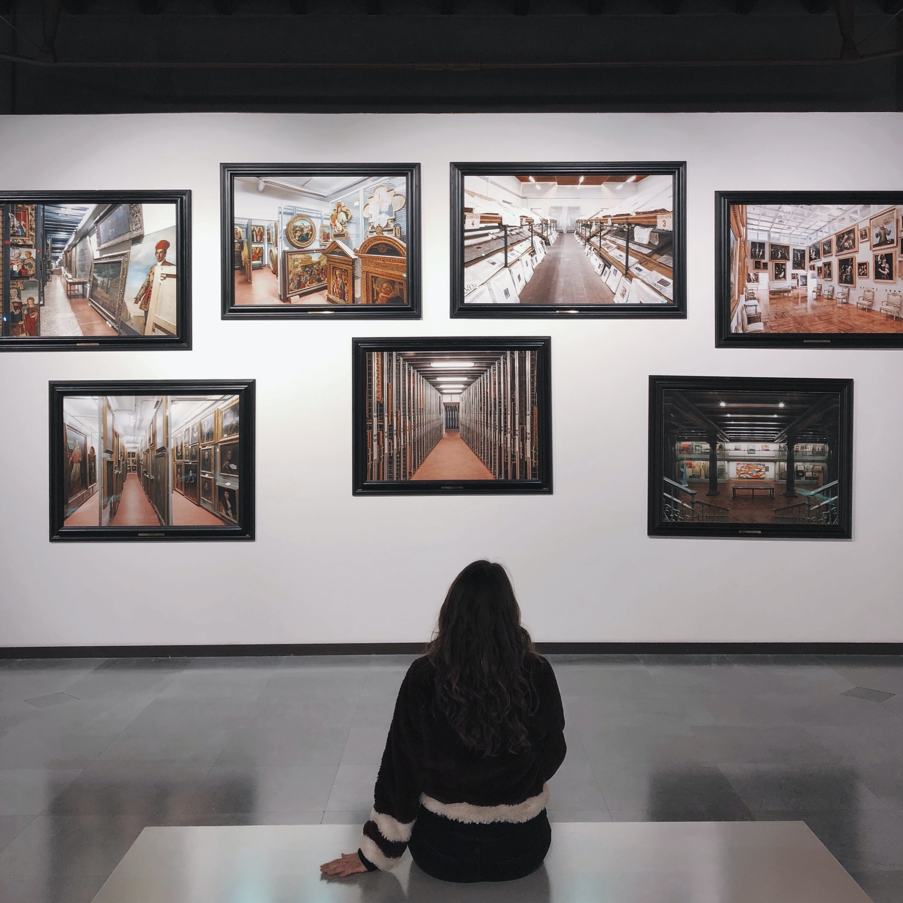

ART GALLARY TM
An art gallery or art museum is a building or space for the exhibition of art, usually visual art. Museums can be public or private, but what distinguishes a museum is the ownership of a collection. Paintings are the most commonly displayed art objects;
however, sculpture, decorative arts, furniture, textiles, costume, drawings, pastels, watercolors, collages, prints, artists' books, photographs, and installation art are also regularly shown. Although primarily concerned with providing a space
to show works of visual art, art galleries are sometimes used to host other artistic activities, such as performance art, music concerts, or poetry readings.
